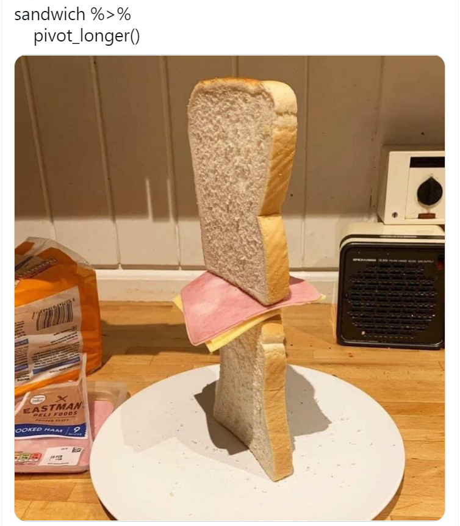

Язык программирования R для анализа данных: лекция 4
Введение в tidyverse, основные функции dplyr
3/7/23
Цель занятия
Разберем наиболее важные функции tidyverse, в основном из пакета dplyr.
Что почитать:
R4DataScience - книга от центрального разработчика
tidyverseHadley Wickham и Garrett Grolemund.Анализ данных и статистика в R (автор Иван Поздняков).
ggplot2: Elegant Graphics for Data Analysis (Hadley Wickham, Danielle Navarro, and Thomas Lin Pedersen).
Туториал по библиотеке
purrrот Charlotte Wickham

Подходы к анализу данных в R
Можно выделить три основных подхода для манипуляций с данными в R:
base R, tidyverse, data.table.
| base R | tidyverse | data.table | |
|---|---|---|---|
| + | Стабильный, доступен по умолчанию |
Быстрее, чем base, много источников, понятный синтаксис, использование пайпов |
Лаконичный синтаксис, очень быстрый, эффективный по памяти, нет зависимостей, обратная совместимость |
| - | Медленно работает, неуклюжий синтаксис |
Много зависимостей, медленнее чем data.table, бывают проблемы с обратной совместимостью |
Лаконичный синтаксис бывает трудно расшифровать, сложнее изучать |
Если данных немного - рекомендую tidyverse, если таблицы измеряются в гигабайтах - data.table.
Немного контекста
tidyverse - набор пакетов для анализа данных, объединенных сходным синтаксисом и философией. Есть ключевые пакеты (core tidyverse), есть ряд дополнительных для работы с различными данными и форматами (например библиотека readxl для чтения .xlsx файлов).
Совет:
Подробнее со сравнением base/tidyverse/data.table можно ознакомиться здесь
Core tidyverse - 8 основных пакетов
dplyrдля манипуляций с таблицамиreadrдля быстрого чтения и записи данных в Rtidyrдля приведения табличек в аккуратный видtibbleболее аккуратный и быстрый вариант датафреймаggplot2для работы с графикамиstringrдля работы со строкамиpurrrдля замены циклов и функций семейства*apply()forcatsдля работы с факторами

Cheatsheets
Для многих пакетов в tidyverse есть свои cheatsheets (шпаргалки) - собранные на одном листе краткие описания наиболее часто использующихся команд:
Reading and writing: readr
Data manipulation: dplyr
Tidying data: tidyr
Visualization: ggplot2
String manipulation: stringr
Лучше всего найти актуальные читшиты из самой RStudio: Help -> Cheet Sheets (иначе можно наткнуться на устаревший читшит).
Установка tidyverse
Для установки всего набора “пакета с пакетами” достаточно набрать в консоли R:
Для загрузки пакета:
Философия tidyverse: основные принципы
Использование и переиспользование уже существующих структур данных (прямоугольная таблица);
Сочетание простых функций в конвейере (пайпы);
Следование парадигме функционального программирования;
Понятный и удобный дизайн функций (например, общий префикс у сходных функций).
Пайпы - основа философии tidyverse
Можно записать код так:
Или создать кучу промежуточных переменных:
Но для большей читаемости используем:
Пайпы - классная иллюстрация
Без пайпов это было бы: slice(decorate(bake(mix(ingredients))))
pipe - %>% в тайдиверс стиле. Горячая клавиша: Ctrl Shift M.
С R 4.1 добавили нативный пайп |> (доступен без тайдиверса), однако мы будем пользоваться %>% этим пайпом.
Пример использования пайпов
Например,
Тоже самое, что и
Если нужно пробросить данные в следующую функцию не на первую позицию, то можно использовать .
dplyr - мощный пакет для преобразования таблиц
Есть множество dplyr глаголов (verbs), которые позволяют сделать практически любое преобразование данных. Основными и наиболее часто использующими глаголами являются:
select()- выбор столбцов по названию или индексу;filter()- выбор строк по условию;mutate()- создание новых колонок;group_by()- группировка;summarise()- подсчет суммарных статистик;arrange()- сортировка.
Разберем каждый из них поподробнее.
Данные для работы
Статистики по юнитам из Warcraft 3.
Скачала отсюда и сохранила в github-репозитории.
Загрузим данные, на этот раз с использованием функции из библиотеки readr:
- Здесь для правильного чтения пропущенных значений используем параметр:
na = '-'.
janitor::clean_names()для синтаксически правильных имен колонок.
Посмотрим на данные
# A tibble: 6 × 7
unit race gold wood pop hp armor_type
<chr> <chr> <dbl> <dbl> <dbl> <dbl> <chr>
1 Peasant Human 75 0 1 220 Medium
2 Militia Human NA NA 1 220 Heavy
3 Footman Human 135 0 2 420 Heavy
4 Rifleman Human 205 30 3 535 Medium
5 Knight Human 245 60 4 835 Heavy
6 Priest Human 135 10 2 290 Unarmored Чем просто датафрейм отличается от тиббла?
Тиббл (tibble) из библиотеки tibble:
[1] "spec_tbl_df" "tbl_df" "tbl" "data.frame" # A tibble: 71 × 21
unit race gold wood pop hp armor…¹ armor sight speed time groun…²
<chr> <chr> <dbl> <dbl> <dbl> <dbl> <chr> <dbl> <dbl> <dbl> <dbl> <chr>
1 Peasant Human 75 0 1 220 Medium 0 80 190 15 Normal
2 Militia Human NA NA 1 220 Heavy 4 140 270 NA Normal
3 Footman Human 135 0 2 420 Heavy 2 140 270 20 Normal
4 Riflem… Human 205 30 3 535 Medium 0 140 270 26 Pierce
5 Knight Human 245 60 4 835 Heavy 5 140 350 45 Normal
6 Priest Human 135 10 2 290 Unarmo… 0 140 270 28 Magic
7 Sorcer… Human 155 20 2 325 Unarmo… 0 140 270 30 Magic
8 Spell … Human 215 30 3 600 Medium 3 140 300 28 Normal
9 Flying… Human 90 30 1 200 Heavy 2 180 400 13 Siege
10 Mortar… Human 180 70 3 360 Heavy 0 140 270 40 Siege
# … with 61 more rows, 9 more variables: damage <dbl>, cooldown <dbl>,
# dps <dbl>, range <dbl>, air_attack <chr>, damage_2 <dbl>, cooldown_2 <dbl>,
# dps_2 <dbl>, range_2 <dbl>, and abbreviated variable names ¹armor_type,
# ²ground_attackЧем просто датафрейм отличается от тиббла?
Обычный датафрейм:
wc3_units_df <- read.table('data/wc3_units.txt', sep = '\t',
header = TRUE, na.strings = '-')
wc3_units_df Unit Race Gold Wood Pop HP Armor.Type Armor Sight Speed
1 Peasant Human 75 0 1 220 Medium 0 80 190
2 Militia Human NA NA 1 220 Heavy 4 140 270
3 Footman Human 135 0 2 420 Heavy 2 140 270
4 Rifleman Human 205 30 3 535 Medium 0 140 270
5 Knight Human 245 60 4 835 Heavy 5 140 350
6 Priest Human 135 10 2 290 Unarmored 0 140 270
7 Sorceress Human 155 20 2 325 Unarmored 0 140 270
8 Spell Breaker Human 215 30 3 600 Medium 3 140 300
9 Flying Machine Human 90 30 1 200 Heavy 2 180 400
10 Mortar Team Human 180 70 3 360 Heavy 0 140 270
11 Siege Engine Human 195 60 3 700 Fort 2 140 220
12 Gryphon Rider Human 280 70 4 825 Light 0 160 320
13 Dragonhawk Rider Human 200 30 3 575 Light 1 140 350
14 Water Elemental 1 Human NA NA NA 525 Heavy 0 120 220
15 Water Elemental 2 Human NA NA NA 675 Heavy 1 120 220
16 Water Elemental 3 Human NA NA NA 900 Heavy 2 120 220
17 Phoenix Human NA NA NA 1250 Light 1 160 320
18 Peon Orc 75 0 1 250 Medium 0 80 190
19 Grunt Orc 200 0 3 700 Heavy 1 140 270
20 T. Headhunter Orc 135 20 2 350 Medium 0 140 270
21 T. Berserker Orc 135 20 2 450 Medium 0 140 270
22 Demolisher Orc 220 50 4 425 Heavy 2 140 220
23 Raider Orc 180 40 3 610 Medium 1 140 350
24 Tauren Orc 280 80 5 1300 Heavy 3 140 270
25 Shaman Orc 130 20 2 335 Unarmored 0 140 270
26 Witch Doctor Orc 145 25 2 315 Unarmored 0 140 270
27 Spirit Walker Orc 195 35 3 500 Unarmored 0 140 270
28 Kodo Beast Orc 255 60 4 1000 Unarmored 1 140 220
29 Wind Rider Orc 265 40 4 570 Light 0 160 320
30 Troll Batrider Orc 160 40 2 325 Light 0 140 320
31 Spirit Wolf Orc NA NA NA 200 Heavy 0 120 320
32 Dire Wolf Orc NA NA NA 300 Heavy 0 120 350
33 Shadow Wolf Orc NA NA NA 500 Heavy 0 120 350
34 Serpent Ward Orc NA NA NA 75 Heavy 0 120 NA
35 Wisp N.Elf 60 0 1 120 Medium 0 100 270
36 Archer N.Elf 130 10 2 245 Medium 0 140 270
37 Huntress N.Elf 195 20 3 600 Unarmored 2 140 350
38 Glaive Thrower N.Elf 210 65 3 300 Heavy 2 140 220
39 Dryad N.Elf 145 60 3 435 Unarmored 0 140 350
40 DoC Druid Form N.Elf 255 80 4 130 Heavy 1 140 270
41 DoC Bear Form N.Elf NA NA 4 960 Heavy 3 140 270
42 Mountain Giant N.Elf 425 100 7 1600 Medium 4 120 270
43 Mountain Giant 2 N.Elf 425 100 7 1600 Medium 10 120 270
44 Hippogryph N.Elf 160 20 2 525 Unarmored 0 160 400
45 DoT Druid Form N.Elf 135 20 2 300 Unarmored 0 140 270
46 DoT Crow Form N.Elf NA NA 2 300 Unarmored 0 160 320
47 Faerie Dragon N.Elf 155 25 2 450 Light 0 160 350
48 Hippogryph Rider N.Elf NA NA 4 765 Light 1 160 350
49 Chimaera N.Elf 330 70 5 1000 Light 2 160 250
50 Chimaera 2 N.Elf 330 70 5 1000 Light 2 160 250
51 Treant N.Elf NA NA NA 300 Heavy 0 120 220
52 Avatar of Vengeance N.Elf NA NA NA 1200 Heavy 2 120 320
53 Spirit of Vengeance N.Elf NA NA NA 500 Invulnerable NA 120 270
54 Acolyte Undead 75 0 1 220 Medium 0 80 220
55 Ghoul Undead 120 0 2 340 Heavy 0 140 270
56 Crypt Fiend Undead 215 40 3 550 Medium 0 140 270
57 Gargoyle Undead 185 30 2 410 Unarmored 3 160 350
58 Abomination Undead 240 70 4 1175 Heavy 2 140 270
59 Meat Wagon Undead 230 50 4 380 Heavy 2 140 220
60 Necromancer Undead 145 20 2 305 Unarmored 0 140 270
61 Banshee Undead 155 30 2 285 Unarmored 0 140 270
62 Frost Wyrm Undead 385 120 7 1350 Light 1 160 270
63 Shade Undead NA NA 1 125 Medium 0 190 350
64 Skeleton Warrior Undead NA NA 0 180 Heavy 1 80 270
65 Skeletal Mage Undead NA NA 0 230 Medium 0 140 270
66 Infernal Undead NA NA NA 1500 Heavy 6 140 320
67 Carrion Beetle 1 Undead NA NA 0 140 Heavy 2 120 270
68 Carrion Beetle 2 Undead NA NA 0 275 Heavy 2 120 270
69 Carrion Beetle 3 Undead NA NA 0 410 Heavy 2 120 270
70 Obsidian Statue Undead 200 35 3 550 Heavy 4 120 270
71 Destroyer Undead NA NA 5 900 Light 3 140 320
Time Ground.Attack Damage Cooldown DPS Range Air.Attack Damage.1
1 15 Normal 5.5 2.00 2.75 0.0 <NA> NA
2 NA Normal 12.5 1.20 10.42 0.0 <NA> NA
3 20 Normal 12.5 1.35 9.26 0.0 <NA> NA
4 26 Pierce 21.0 1.50 14.00 40.0 Pierce 21.0
5 45 Normal 34.0 1.40 24.29 0.0 <NA> NA
6 28 Magic 8.5 2.00 4.25 60.0 Magic 8.5
7 30 Magic 11.0 1.75 6.29 60.0 Magic 11.0
8 28 Normal 14.0 1.90 7.37 25.0 <NA> NA
9 13 Siege 7.5 2.50 3.00 0.0 Pierce 14.5
10 40 Siege 58.0 3.50 16.57 115.0 <NA> NA
11 55 Siege 50.0 2.10 23.81 19.0 Siege 13.5
12 45 Magic 50.0 2.20 22.73 45.0 Magic 50.0
13 28 Pierce 19.0 1.75 10.86 30.0 Pierce 19.0
14 NA Pierce 20.0 1.50 13.33 30.0 Pierce 20.0
15 NA Pierce 35.0 1.50 23.33 30.0 Pierce 35.0
16 NA Pierce 45.0 1.50 30.00 30.0 Pierce 45.0
17 NA Magic 68.0 1.40 48.57 60.0 Magic 68.0
18 15 Normal 7.5 3.00 2.50 0.0 <NA> NA
19 30 Normal 19.5 1.60 12.19 0.0 <NA> NA
20 20 Pierce 25.0 2.31 10.82 45.0 Pierce 25.0
21 22 Pierce 25.0 2.31 10.82 45.0 Pierce 25.0
22 40 Siege 80.5 4.50 17.89 115.0 <NA> NA
23 28 Siege 25.0 1.85 13.51 0.0 <NA> NA
24 44 Normal 33.0 1.90 17.37 0.0 <NA> NA
25 30 Magic 8.5 2.10 4.05 60.0 Magic 8.5
26 30 Magic 12.0 1.75 6.86 60.0 Magic 12.0
27 38 Magic 19.5 1.75 11.14 40.0 Magic 19.5
28 30 Pierce 18.0 1.44 12.50 50.0 Pierce 18.0
29 35 Pierce 40.0 2.00 20.00 45.0 Pierce 40.0
30 28 Siege 14.0 1.80 7.78 30.0 <NA> NA
31 NA Normal 11.5 1.00 11.50 0.0 <NA> NA
32 NA Normal 16.5 1.00 16.50 0.0 <NA> NA
33 NA Normal 21.5 1.00 21.50 0.0 <NA> NA
34 NA Pierce 12.0 1.50 8.00 60.0 Pierce 12.0
35 14 <NA> NA NA NA NA <NA> NA
36 20 Pierce 17.0 1.50 11.33 50.0 Pierce 17.0
37 30 Normal 17.0 1.80 9.44 22.0 <NA> NA
38 48 Siege 44.5 3.50 12.71 115.0 <NA> NA
39 30 Pierce 18.0 2.00 9.00 50.0 Pierce 18.0
40 35 Normal 20.5 1.50 13.67 0.0 <NA> NA
41 NA Normal 36.5 1.50 24.33 0.0 <NA> NA
42 45 Normal 34.0 2.50 13.60 0.0 <NA> NA
43 45 Siege 41.0 2.50 16.40 25.0 <NA> NA
44 40 <NA> NA NA NA NA Normal 53.5
45 22 Magic 12.0 1.60 7.50 60.0 Magic 12.0
46 NA Magic NA 1.75 NA 60.0 Magic 38.0
47 25 Pierce 15.0 1.75 8.57 30.0 Pierce 15.0
48 NA Pierce 17.0 1.10 15.45 40.0 Pierce 17.0
49 65 Magic 75.0 2.50 30.00 45.0 <NA> NA
50 65 Siege 50.0 2.50 20.00 85.0 <NA> NA
51 NA Normal 16.0 1.75 9.14 0.0 <NA> NA
52 NA Normal 30.5 1.35 22.59 45.0 Normal 30.5
53 NA Pierce 16.0 1.35 11.85 45.0 Pierce 16.0
54 15 Normal 9.5 2.50 3.80 0.0 <NA> NA
55 18 Normal 13.0 1.30 10.00 0.0 <NA> NA
56 30 Pierce 28.5 2.00 14.25 55.0 <NA> NA
57 35 Pierce 19.5 2.20 8.86 30.0 Normal 65.5
58 40 Normal 36.0 1.90 18.95 0.0 <NA> NA
59 45 Siege 79.5 4.00 19.88 115.0 <NA> NA
60 24 Magic 8.5 1.80 4.72 60.0 Magic 8.5
61 28 Magic 11.0 1.50 7.33 60.0 Magic 11.0
62 65 Magic 104.0 3.00 34.67 30.0 Magic 89.0
63 15 <NA> NA NA NA NA <NA> NA
64 NA Normal 14.5 2.00 7.25 0.0 <NA> NA
65 NA Pierce 11.5 1.50 7.67 50.0 Pierce 11.5
66 NA Chaos 54.5 1.35 40.37 0.0 <NA> NA
67 NA Normal 8.5 1.50 5.67 0.0 <NA> NA
68 NA Normal 16.5 1.50 11.00 0.0 <NA> NA
69 NA Normal 24.5 1.50 16.33 0.0 <NA> NA
70 45 Magic 7.5 2.10 3.57 57.5 Magic 7.5
71 NA Magic 20.0 1.35 14.81 45.0 Magic 20.0
Cooldown.1 DPS.1 Range.1
1 NA NA NA
2 NA NA NA
3 NA NA NA
4 1.50 14.00 60.0
5 NA NA NA
6 2.00 4.25 60.0
7 1.75 6.29 60.0
8 NA NA NA
9 2.00 7.25 50.0
10 NA NA NA
11 2.10 6.43 50.0
12 2.40 20.83 45.0
13 1.75 10.86 30.0
14 1.50 13.33 30.0
15 1.50 23.33 30.0
16 1.50 30.00 30.0
17 1.40 48.57 60.0
18 NA NA NA
19 NA NA NA
20 2.31 10.82 45.0
21 2.31 10.82 45.0
22 NA NA NA
23 NA NA NA
24 NA NA NA
25 2.10 4.05 60.0
26 1.75 6.86 60.0
27 1.75 11.14 40.0
28 1.44 12.50 50.0
29 2.00 20.00 45.0
30 NA NA NA
31 NA NA NA
32 NA NA NA
33 NA NA NA
34 1.50 8.00 60.0
35 NA NA NA
36 1.50 11.33 50.0
37 NA NA NA
38 NA NA NA
39 2.00 9.00 50.0
40 NA NA NA
41 NA NA NA
42 NA NA NA
43 NA NA NA
44 1.05 50.95 0.0
45 1.60 7.50 60.0
46 1.75 21.71 60.0
47 1.75 8.57 30.0
48 1.10 15.45 10.0
49 NA NA NA
50 NA NA NA
51 NA NA NA
52 1.35 22.59 45.0
53 1.35 11.85 45.0
54 NA NA NA
55 NA NA NA
56 NA NA NA
57 1.40 46.79 0.0
58 NA NA NA
59 NA NA NA
60 1.80 4.72 60.0
61 1.50 7.33 60.0
62 3.00 29.67 30.0
63 NA NA NA
64 NA NA NA
65 1.50 7.67 50.0
66 NA NA NA
67 NA NA NA
68 NA NA NA
69 NA NA NA
70 2.10 3.57 57.5
71 1.35 14.81 45.0Тиббл более аккуратный и быстрый вариант датафрейма.
Работа с колонками
select() - выбираем нужные колонки по названию или индексу
Выбрать колонку тип брони (armor_type) по названию или индексу (без кавычек).
# A tibble: 71 × 1
armor_type
<chr>
1 Medium
2 Heavy
3 Heavy
4 Medium
5 Heavy
6 Unarmored
7 Unarmored
8 Medium
9 Heavy
10 Heavy
# … with 61 more rows# A tibble: 71 × 1
armor_type
<chr>
1 Medium
2 Heavy
3 Heavy
4 Medium
5 Heavy
6 Unarmored
7 Unarmored
8 Medium
9 Heavy
10 Heavy
# … with 61 more rowsselect() - выбираем нужные колонки по названию или индексу
Можно выбирать несколько колонок просто перечислением или выбрать несколько колонок с одной по другую с помощью двоеточия :
# A tibble: 71 × 3
unit race hp
<chr> <chr> <dbl>
1 Peasant Human 220
2 Militia Human 220
3 Footman Human 420
4 Rifleman Human 535
5 Knight Human 835
6 Priest Human 290
7 Sorceress Human 325
8 Spell Breaker Human 600
9 Flying Machine Human 200
10 Mortar Team Human 360
# … with 61 more rowsselect() - выбираем нужные колонки по названию или индексу
# A tibble: 71 × 12
unit race gold wood pop hp armor…¹ groun…² damage coold…³ dps
<chr> <chr> <dbl> <dbl> <dbl> <dbl> <chr> <chr> <dbl> <dbl> <dbl>
1 Peasant Human 75 0 1 220 Medium Normal 5.5 2 2.75
2 Militia Human NA NA 1 220 Heavy Normal 12.5 1.2 10.4
3 Footman Human 135 0 2 420 Heavy Normal 12.5 1.35 9.26
4 Rifleman Human 205 30 3 535 Medium Pierce 21 1.5 14
5 Knight Human 245 60 4 835 Heavy Normal 34 1.4 24.3
6 Priest Human 135 10 2 290 Unarmo… Magic 8.5 2 4.25
7 Sorceress Human 155 20 2 325 Unarmo… Magic 11 1.75 6.29
8 Spell Bre… Human 215 30 3 600 Medium Normal 14 1.9 7.37
9 Flying Ma… Human 90 30 1 200 Heavy Siege 7.5 2.5 3
10 Mortar Te… Human 180 70 3 360 Heavy Siege 58 3.5 16.6
# … with 61 more rows, 1 more variable: range <dbl>, and abbreviated variable
# names ¹armor_type, ²ground_attack, ³cooldownNote
Выбор колонок без кавычек - NSE (not standard evaluation, выбор колонок с помощью двоеточия - концепция tidyselect).
select() + pull() для выбора одной колонки
При селекте одной колонки она не превращается в вектор по умолчанию, а остается датасетом с одной колонкой. Но иногда мы хотим извлечь именно вектор, а не маленький датасет. В таком случае понадобится функция pull().
Сравните:
В base R можно задать сохранение размерности датафрейма аргументом drop = FALSE при индексации.
Работа со строками
filter() - выбрать нужные строки по условию
Выберем только юнитов ночных эльфов (‘N.Elf’)
| unit | race | gold | wood | pop | hp | armor_type | armor | sight | speed | time | ground_attack | damage | cooldown | dps | range | air_attack | damage_2 | cooldown_2 | dps_2 | range_2 |
|---|---|---|---|---|---|---|---|---|---|---|---|---|---|---|---|---|---|---|---|---|
| Wisp | N.Elf | 60 | 0 | 1 | 120 | Medium | 0 | 100 | 270 | 14 | NA | NA | NA | NA | NA | NA | NA | NA | NA | NA |
| Archer | N.Elf | 130 | 10 | 2 | 245 | Medium | 0 | 140 | 270 | 20 | Pierce | 17.0 | 1.50 | 11.33 | 50 | Pierce | 17.0 | 1.50 | 11.33 | 50 |
| Huntress | N.Elf | 195 | 20 | 3 | 600 | Unarmored | 2 | 140 | 350 | 30 | Normal | 17.0 | 1.80 | 9.44 | 22 | NA | NA | NA | NA | NA |
| Glaive Thrower | N.Elf | 210 | 65 | 3 | 300 | Heavy | 2 | 140 | 220 | 48 | Siege | 44.5 | 3.50 | 12.71 | 115 | NA | NA | NA | NA | NA |
| Dryad | N.Elf | 145 | 60 | 3 | 435 | Unarmored | 0 | 140 | 350 | 30 | Pierce | 18.0 | 2.00 | 9.00 | 50 | Pierce | 18.0 | 2.00 | 9.00 | 50 |
| DoC Druid Form | N.Elf | 255 | 80 | 4 | 130 | Heavy | 1 | 140 | 270 | 35 | Normal | 20.5 | 1.50 | 13.67 | 0 | NA | NA | NA | NA | NA |
| DoC Bear Form | N.Elf | NA | NA | 4 | 960 | Heavy | 3 | 140 | 270 | NA | Normal | 36.5 | 1.50 | 24.33 | 0 | NA | NA | NA | NA | NA |
| Mountain Giant | N.Elf | 425 | 100 | 7 | 1600 | Medium | 4 | 120 | 270 | 45 | Normal | 34.0 | 2.50 | 13.60 | 0 | NA | NA | NA | NA | NA |
| Mountain Giant 2 | N.Elf | 425 | 100 | 7 | 1600 | Medium | 10 | 120 | 270 | 45 | Siege | 41.0 | 2.50 | 16.40 | 25 | NA | NA | NA | NA | NA |
| Hippogryph | N.Elf | 160 | 20 | 2 | 525 | Unarmored | 0 | 160 | 400 | 40 | NA | NA | NA | NA | NA | Normal | 53.5 | 1.05 | 50.95 | 0 |
| DoT Druid Form | N.Elf | 135 | 20 | 2 | 300 | Unarmored | 0 | 140 | 270 | 22 | Magic | 12.0 | 1.60 | 7.50 | 60 | Magic | 12.0 | 1.60 | 7.50 | 60 |
| DoT Crow Form | N.Elf | NA | NA | 2 | 300 | Unarmored | 0 | 160 | 320 | NA | Magic | NA | 1.75 | NA | 60 | Magic | 38.0 | 1.75 | 21.71 | 60 |
| Faerie Dragon | N.Elf | 155 | 25 | 2 | 450 | Light | 0 | 160 | 350 | 25 | Pierce | 15.0 | 1.75 | 8.57 | 30 | Pierce | 15.0 | 1.75 | 8.57 | 30 |
| Hippogryph Rider | N.Elf | NA | NA | 4 | 765 | Light | 1 | 160 | 350 | NA | Pierce | 17.0 | 1.10 | 15.45 | 40 | Pierce | 17.0 | 1.10 | 15.45 | 10 |
| Chimaera | N.Elf | 330 | 70 | 5 | 1000 | Light | 2 | 160 | 250 | 65 | Magic | 75.0 | 2.50 | 30.00 | 45 | NA | NA | NA | NA | NA |
| Chimaera 2 | N.Elf | 330 | 70 | 5 | 1000 | Light | 2 | 160 | 250 | 65 | Siege | 50.0 | 2.50 | 20.00 | 85 | NA | NA | NA | NA | NA |
| Treant | N.Elf | NA | NA | NA | 300 | Heavy | 0 | 120 | 220 | NA | Normal | 16.0 | 1.75 | 9.14 | 0 | NA | NA | NA | NA | NA |
| Avatar of Vengeance | N.Elf | NA | NA | NA | 1200 | Heavy | 2 | 120 | 320 | NA | Normal | 30.5 | 1.35 | 22.59 | 45 | Normal | 30.5 | 1.35 | 22.59 | 45 |
| Spirit of Vengeance | N.Elf | NA | NA | NA | 500 | Invulnerable | NA | 120 | 270 | NA | Pierce | 16.0 | 1.35 | 11.85 | 45 | Pierce | 16.0 | 1.35 | 11.85 | 45 |
filter() - выбрать нужные строки по условию
Можно комбинировать несколько условий, используя логическое И (&), ИЛИ (|). Например, выберем только юнитов ночных эльфов, показатель урона (damage) которых больше 40:
| unit | race | gold | wood | pop | hp | armor_type | armor | sight | speed | time | ground_attack | damage | cooldown | dps | range | air_attack | damage_2 | cooldown_2 | dps_2 | range_2 |
|---|---|---|---|---|---|---|---|---|---|---|---|---|---|---|---|---|---|---|---|---|
| Glaive Thrower | N.Elf | 210 | 65 | 3 | 300 | Heavy | 2 | 140 | 220 | 48 | Siege | 44.5 | 3.5 | 12.71 | 115 | NA | NA | NA | NA | NA |
| Mountain Giant 2 | N.Elf | 425 | 100 | 7 | 1600 | Medium | 10 | 120 | 270 | 45 | Siege | 41.0 | 2.5 | 16.40 | 25 | NA | NA | NA | NA | NA |
| Chimaera | N.Elf | 330 | 70 | 5 | 1000 | Light | 2 | 160 | 250 | 65 | Magic | 75.0 | 2.5 | 30.00 | 45 | NA | NA | NA | NA | NA |
| Chimaera 2 | N.Elf | 330 | 70 | 5 | 1000 | Light | 2 | 160 | 250 | 65 | Siege | 50.0 | 2.5 | 20.00 | 85 | NA | NA | NA | NA | NA |
slice() - выбираем строки по индексу
slice() - вывести строки в опреденном диапазоне (используя просто индексы строк)
# A tibble: 6 × 21
unit race gold wood pop hp armor…¹ armor sight speed time groun…²
<chr> <chr> <dbl> <dbl> <dbl> <dbl> <chr> <dbl> <dbl> <dbl> <dbl> <chr>
1 Mortar … Human 180 70 3 360 Heavy 0 140 270 40 Siege
2 Siege E… Human 195 60 3 700 Fort 2 140 220 55 Siege
3 Gryphon… Human 280 70 4 825 Light 0 160 320 45 Magic
4 Dragonh… Human 200 30 3 575 Light 1 140 350 28 Pierce
5 Water E… Human NA NA NA 525 Heavy 0 120 220 NA Pierce
6 Water E… Human NA NA NA 675 Heavy 1 120 220 NA Pierce
# … with 9 more variables: damage <dbl>, cooldown <dbl>, dps <dbl>,
# range <dbl>, air_attack <chr>, damage_2 <dbl>, cooldown_2 <dbl>,
# dps_2 <dbl>, range_2 <dbl>, and abbreviated variable names ¹armor_type,
# ²ground_attackslice_max(), slice_min()
slice_max() - вывести максимальные значения по какому-то признаку
Функции slice_max/slice_min() сортируют выдачу, в отличие от теперь устаревшей top_n().
slice_sample() - вывести случайные строки
В функции slice_sample() нужен аргумент n, обозначающий количество строк для печати.
# A tibble: 6 × 21
unit race gold wood pop hp armor…¹ armor sight speed time groun…²
<chr> <chr> <dbl> <dbl> <dbl> <dbl> <chr> <dbl> <dbl> <dbl> <dbl> <chr>
1 DoC Dru… N.Elf 255 80 4 130 Heavy 1 140 270 35 Normal
2 Faerie … N.Elf 155 25 2 450 Light 0 160 350 25 Pierce
3 Grunt Orc 200 0 3 700 Heavy 1 140 270 30 Normal
4 Footman Human 135 0 2 420 Heavy 2 140 270 20 Normal
5 Dryad N.Elf 145 60 3 435 Unarmo… 0 140 350 30 Pierce
6 Mortar … Human 180 70 3 360 Heavy 0 140 270 40 Siege
# … with 9 more variables: damage <dbl>, cooldown <dbl>, dps <dbl>,
# range <dbl>, air_attack <chr>, damage_2 <dbl>, cooldown_2 <dbl>,
# dps_2 <dbl>, range_2 <dbl>, and abbreviated variable names ¹armor_type,
# ²ground_attackПолезно, чтобы посмотреть часть датафрейма.
select/filter
Мнемоническое правило, чтобы не забыть, к чему относится select и filter
SeleCt - Column
FilteR - Row
Изменение колонок
mutate() - создать новую колонку или изменить существующую
Можно просто составить новую колонку из предыдущих, используя синтаксис mutate(column_name = <expression>).
Проверим, что dps (damage per second) = damage / cooldown
mutate() - создать новую колонку или изменить существующую
# A tibble: 71 × 5
unit damage cooldown damage_per_second dps
<chr> <dbl> <dbl> <dbl> <dbl>
1 Peasant 5.5 2 2.75 2.75
2 Militia 12.5 1.2 10.4 10.4
3 Footman 12.5 1.35 9.26 9.26
4 Rifleman 21 1.5 14 14
5 Knight 34 1.4 24.3 24.3
6 Priest 8.5 2 4.25 4.25
7 Sorceress 11 1.75 6.29 6.29
8 Spell Breaker 14 1.9 7.37 7.37
9 Flying Machine 7.5 2.5 3 3
10 Mortar Team 58 3.5 16.6 16.6
# … with 61 more rowsmutate() - создать новую колонку или изменить существующую
Узнаем показатель отношения dps / на число пищи, чтобы узнать какие юниты самые эффективные.
| unit | dps_food_ratio | race | gold | wood | pop | hp | armor_type | armor | sight | speed | time | ground_attack | damage | cooldown | dps | range | air_attack | damage_2 | cooldown_2 | dps_2 | range_2 | damage_per_second |
|---|---|---|---|---|---|---|---|---|---|---|---|---|---|---|---|---|---|---|---|---|---|---|
| Peasant | 2.750000 | Human | 75 | 0 | 1 | 220 | Medium | 0 | 80 | 190 | 15 | Normal | 5.5 | 2.00 | 2.75 | 0.0 | NA | NA | NA | NA | NA | 2.750000 |
| Militia | 10.420000 | Human | NA | NA | 1 | 220 | Heavy | 4 | 140 | 270 | NA | Normal | 12.5 | 1.20 | 10.42 | 0.0 | NA | NA | NA | NA | NA | 10.416667 |
| Footman | 4.630000 | Human | 135 | 0 | 2 | 420 | Heavy | 2 | 140 | 270 | 20 | Normal | 12.5 | 1.35 | 9.26 | 0.0 | NA | NA | NA | NA | NA | 9.259259 |
| Rifleman | 4.666667 | Human | 205 | 30 | 3 | 535 | Medium | 0 | 140 | 270 | 26 | Pierce | 21.0 | 1.50 | 14.00 | 40.0 | Pierce | 21.0 | 1.50 | 14.00 | 60.0 | 14.000000 |
| Knight | 6.072500 | Human | 245 | 60 | 4 | 835 | Heavy | 5 | 140 | 350 | 45 | Normal | 34.0 | 1.40 | 24.29 | 0.0 | NA | NA | NA | NA | NA | 24.285714 |
| Priest | 2.125000 | Human | 135 | 10 | 2 | 290 | Unarmored | 0 | 140 | 270 | 28 | Magic | 8.5 | 2.00 | 4.25 | 60.0 | Magic | 8.5 | 2.00 | 4.25 | 60.0 | 4.250000 |
| Sorceress | 3.145000 | Human | 155 | 20 | 2 | 325 | Unarmored | 0 | 140 | 270 | 30 | Magic | 11.0 | 1.75 | 6.29 | 60.0 | Magic | 11.0 | 1.75 | 6.29 | 60.0 | 6.285714 |
| Spell Breaker | 2.456667 | Human | 215 | 30 | 3 | 600 | Medium | 3 | 140 | 300 | 28 | Normal | 14.0 | 1.90 | 7.37 | 25.0 | NA | NA | NA | NA | NA | 7.368421 |
| Flying Machine | 3.000000 | Human | 90 | 30 | 1 | 200 | Heavy | 2 | 180 | 400 | 13 | Siege | 7.5 | 2.50 | 3.00 | 0.0 | Pierce | 14.5 | 2.00 | 7.25 | 50.0 | 3.000000 |
| Mortar Team | 5.523333 | Human | 180 | 70 | 3 | 360 | Heavy | 0 | 140 | 270 | 40 | Siege | 58.0 | 3.50 | 16.57 | 115.0 | NA | NA | NA | NA | NA | 16.571429 |
| Siege Engine | 7.936667 | Human | 195 | 60 | 3 | 700 | Fort | 2 | 140 | 220 | 55 | Siege | 50.0 | 2.10 | 23.81 | 19.0 | Siege | 13.5 | 2.10 | 6.43 | 50.0 | 23.809524 |
| Gryphon Rider | 5.682500 | Human | 280 | 70 | 4 | 825 | Light | 0 | 160 | 320 | 45 | Magic | 50.0 | 2.20 | 22.73 | 45.0 | Magic | 50.0 | 2.40 | 20.83 | 45.0 | 22.727273 |
| Dragonhawk Rider | 3.620000 | Human | 200 | 30 | 3 | 575 | Light | 1 | 140 | 350 | 28 | Pierce | 19.0 | 1.75 | 10.86 | 30.0 | Pierce | 19.0 | 1.75 | 10.86 | 30.0 | 10.857143 |
| Water Elemental 1 | NA | Human | NA | NA | NA | 525 | Heavy | 0 | 120 | 220 | NA | Pierce | 20.0 | 1.50 | 13.33 | 30.0 | Pierce | 20.0 | 1.50 | 13.33 | 30.0 | 13.333333 |
| Water Elemental 2 | NA | Human | NA | NA | NA | 675 | Heavy | 1 | 120 | 220 | NA | Pierce | 35.0 | 1.50 | 23.33 | 30.0 | Pierce | 35.0 | 1.50 | 23.33 | 30.0 | 23.333333 |
| Water Elemental 3 | NA | Human | NA | NA | NA | 900 | Heavy | 2 | 120 | 220 | NA | Pierce | 45.0 | 1.50 | 30.00 | 30.0 | Pierce | 45.0 | 1.50 | 30.00 | 30.0 | 30.000000 |
| Phoenix | NA | Human | NA | NA | NA | 1250 | Light | 1 | 160 | 320 | NA | Magic | 68.0 | 1.40 | 48.57 | 60.0 | Magic | 68.0 | 1.40 | 48.57 | 60.0 | 48.571429 |
| Peon | 2.500000 | Orc | 75 | 0 | 1 | 250 | Medium | 0 | 80 | 190 | 15 | Normal | 7.5 | 3.00 | 2.50 | 0.0 | NA | NA | NA | NA | NA | 2.500000 |
| Grunt | 4.063333 | Orc | 200 | 0 | 3 | 700 | Heavy | 1 | 140 | 270 | 30 | Normal | 19.5 | 1.60 | 12.19 | 0.0 | NA | NA | NA | NA | NA | 12.187500 |
| T. Headhunter | 5.410000 | Orc | 135 | 20 | 2 | 350 | Medium | 0 | 140 | 270 | 20 | Pierce | 25.0 | 2.31 | 10.82 | 45.0 | Pierce | 25.0 | 2.31 | 10.82 | 45.0 | 10.822511 |
| T. Berserker | 5.410000 | Orc | 135 | 20 | 2 | 450 | Medium | 0 | 140 | 270 | 22 | Pierce | 25.0 | 2.31 | 10.82 | 45.0 | Pierce | 25.0 | 2.31 | 10.82 | 45.0 | 10.822511 |
| Demolisher | 4.472500 | Orc | 220 | 50 | 4 | 425 | Heavy | 2 | 140 | 220 | 40 | Siege | 80.5 | 4.50 | 17.89 | 115.0 | NA | NA | NA | NA | NA | 17.888889 |
| Raider | 4.503333 | Orc | 180 | 40 | 3 | 610 | Medium | 1 | 140 | 350 | 28 | Siege | 25.0 | 1.85 | 13.51 | 0.0 | NA | NA | NA | NA | NA | 13.513514 |
| Tauren | 3.474000 | Orc | 280 | 80 | 5 | 1300 | Heavy | 3 | 140 | 270 | 44 | Normal | 33.0 | 1.90 | 17.37 | 0.0 | NA | NA | NA | NA | NA | 17.368421 |
| Shaman | 2.025000 | Orc | 130 | 20 | 2 | 335 | Unarmored | 0 | 140 | 270 | 30 | Magic | 8.5 | 2.10 | 4.05 | 60.0 | Magic | 8.5 | 2.10 | 4.05 | 60.0 | 4.047619 |
| Witch Doctor | 3.430000 | Orc | 145 | 25 | 2 | 315 | Unarmored | 0 | 140 | 270 | 30 | Magic | 12.0 | 1.75 | 6.86 | 60.0 | Magic | 12.0 | 1.75 | 6.86 | 60.0 | 6.857143 |
| Spirit Walker | 3.713333 | Orc | 195 | 35 | 3 | 500 | Unarmored | 0 | 140 | 270 | 38 | Magic | 19.5 | 1.75 | 11.14 | 40.0 | Magic | 19.5 | 1.75 | 11.14 | 40.0 | 11.142857 |
| Kodo Beast | 3.125000 | Orc | 255 | 60 | 4 | 1000 | Unarmored | 1 | 140 | 220 | 30 | Pierce | 18.0 | 1.44 | 12.50 | 50.0 | Pierce | 18.0 | 1.44 | 12.50 | 50.0 | 12.500000 |
| Wind Rider | 5.000000 | Orc | 265 | 40 | 4 | 570 | Light | 0 | 160 | 320 | 35 | Pierce | 40.0 | 2.00 | 20.00 | 45.0 | Pierce | 40.0 | 2.00 | 20.00 | 45.0 | 20.000000 |
| Troll Batrider | 3.890000 | Orc | 160 | 40 | 2 | 325 | Light | 0 | 140 | 320 | 28 | Siege | 14.0 | 1.80 | 7.78 | 30.0 | NA | NA | NA | NA | NA | 7.777778 |
| Spirit Wolf | NA | Orc | NA | NA | NA | 200 | Heavy | 0 | 120 | 320 | NA | Normal | 11.5 | 1.00 | 11.50 | 0.0 | NA | NA | NA | NA | NA | 11.500000 |
| Dire Wolf | NA | Orc | NA | NA | NA | 300 | Heavy | 0 | 120 | 350 | NA | Normal | 16.5 | 1.00 | 16.50 | 0.0 | NA | NA | NA | NA | NA | 16.500000 |
| Shadow Wolf | NA | Orc | NA | NA | NA | 500 | Heavy | 0 | 120 | 350 | NA | Normal | 21.5 | 1.00 | 21.50 | 0.0 | NA | NA | NA | NA | NA | 21.500000 |
| Serpent Ward | NA | Orc | NA | NA | NA | 75 | Heavy | 0 | 120 | NA | NA | Pierce | 12.0 | 1.50 | 8.00 | 60.0 | Pierce | 12.0 | 1.50 | 8.00 | 60.0 | 8.000000 |
| Wisp | NA | N.Elf | 60 | 0 | 1 | 120 | Medium | 0 | 100 | 270 | 14 | NA | NA | NA | NA | NA | NA | NA | NA | NA | NA | NA |
| Archer | 5.665000 | N.Elf | 130 | 10 | 2 | 245 | Medium | 0 | 140 | 270 | 20 | Pierce | 17.0 | 1.50 | 11.33 | 50.0 | Pierce | 17.0 | 1.50 | 11.33 | 50.0 | 11.333333 |
| Huntress | 3.146667 | N.Elf | 195 | 20 | 3 | 600 | Unarmored | 2 | 140 | 350 | 30 | Normal | 17.0 | 1.80 | 9.44 | 22.0 | NA | NA | NA | NA | NA | 9.444444 |
| Glaive Thrower | 4.236667 | N.Elf | 210 | 65 | 3 | 300 | Heavy | 2 | 140 | 220 | 48 | Siege | 44.5 | 3.50 | 12.71 | 115.0 | NA | NA | NA | NA | NA | 12.714286 |
| Dryad | 3.000000 | N.Elf | 145 | 60 | 3 | 435 | Unarmored | 0 | 140 | 350 | 30 | Pierce | 18.0 | 2.00 | 9.00 | 50.0 | Pierce | 18.0 | 2.00 | 9.00 | 50.0 | 9.000000 |
| DoC Druid Form | 3.417500 | N.Elf | 255 | 80 | 4 | 130 | Heavy | 1 | 140 | 270 | 35 | Normal | 20.5 | 1.50 | 13.67 | 0.0 | NA | NA | NA | NA | NA | 13.666667 |
| DoC Bear Form | 6.082500 | N.Elf | NA | NA | 4 | 960 | Heavy | 3 | 140 | 270 | NA | Normal | 36.5 | 1.50 | 24.33 | 0.0 | NA | NA | NA | NA | NA | 24.333333 |
| Mountain Giant | 1.942857 | N.Elf | 425 | 100 | 7 | 1600 | Medium | 4 | 120 | 270 | 45 | Normal | 34.0 | 2.50 | 13.60 | 0.0 | NA | NA | NA | NA | NA | 13.600000 |
| Mountain Giant 2 | 2.342857 | N.Elf | 425 | 100 | 7 | 1600 | Medium | 10 | 120 | 270 | 45 | Siege | 41.0 | 2.50 | 16.40 | 25.0 | NA | NA | NA | NA | NA | 16.400000 |
| Hippogryph | NA | N.Elf | 160 | 20 | 2 | 525 | Unarmored | 0 | 160 | 400 | 40 | NA | NA | NA | NA | NA | Normal | 53.5 | 1.05 | 50.95 | 0.0 | NA |
| DoT Druid Form | 3.750000 | N.Elf | 135 | 20 | 2 | 300 | Unarmored | 0 | 140 | 270 | 22 | Magic | 12.0 | 1.60 | 7.50 | 60.0 | Magic | 12.0 | 1.60 | 7.50 | 60.0 | 7.500000 |
| DoT Crow Form | NA | N.Elf | NA | NA | 2 | 300 | Unarmored | 0 | 160 | 320 | NA | Magic | NA | 1.75 | NA | 60.0 | Magic | 38.0 | 1.75 | 21.71 | 60.0 | NA |
| Faerie Dragon | 4.285000 | N.Elf | 155 | 25 | 2 | 450 | Light | 0 | 160 | 350 | 25 | Pierce | 15.0 | 1.75 | 8.57 | 30.0 | Pierce | 15.0 | 1.75 | 8.57 | 30.0 | 8.571429 |
| Hippogryph Rider | 3.862500 | N.Elf | NA | NA | 4 | 765 | Light | 1 | 160 | 350 | NA | Pierce | 17.0 | 1.10 | 15.45 | 40.0 | Pierce | 17.0 | 1.10 | 15.45 | 10.0 | 15.454546 |
| Chimaera | 6.000000 | N.Elf | 330 | 70 | 5 | 1000 | Light | 2 | 160 | 250 | 65 | Magic | 75.0 | 2.50 | 30.00 | 45.0 | NA | NA | NA | NA | NA | 30.000000 |
| Chimaera 2 | 4.000000 | N.Elf | 330 | 70 | 5 | 1000 | Light | 2 | 160 | 250 | 65 | Siege | 50.0 | 2.50 | 20.00 | 85.0 | NA | NA | NA | NA | NA | 20.000000 |
| Treant | NA | N.Elf | NA | NA | NA | 300 | Heavy | 0 | 120 | 220 | NA | Normal | 16.0 | 1.75 | 9.14 | 0.0 | NA | NA | NA | NA | NA | 9.142857 |
| Avatar of Vengeance | NA | N.Elf | NA | NA | NA | 1200 | Heavy | 2 | 120 | 320 | NA | Normal | 30.5 | 1.35 | 22.59 | 45.0 | Normal | 30.5 | 1.35 | 22.59 | 45.0 | 22.592593 |
| Spirit of Vengeance | NA | N.Elf | NA | NA | NA | 500 | Invulnerable | NA | 120 | 270 | NA | Pierce | 16.0 | 1.35 | 11.85 | 45.0 | Pierce | 16.0 | 1.35 | 11.85 | 45.0 | 11.851852 |
| Acolyte | 3.800000 | Undead | 75 | 0 | 1 | 220 | Medium | 0 | 80 | 220 | 15 | Normal | 9.5 | 2.50 | 3.80 | 0.0 | NA | NA | NA | NA | NA | 3.800000 |
| Ghoul | 5.000000 | Undead | 120 | 0 | 2 | 340 | Heavy | 0 | 140 | 270 | 18 | Normal | 13.0 | 1.30 | 10.00 | 0.0 | NA | NA | NA | NA | NA | 10.000000 |
| Crypt Fiend | 4.750000 | Undead | 215 | 40 | 3 | 550 | Medium | 0 | 140 | 270 | 30 | Pierce | 28.5 | 2.00 | 14.25 | 55.0 | NA | NA | NA | NA | NA | 14.250000 |
| Gargoyle | 4.430000 | Undead | 185 | 30 | 2 | 410 | Unarmored | 3 | 160 | 350 | 35 | Pierce | 19.5 | 2.20 | 8.86 | 30.0 | Normal | 65.5 | 1.40 | 46.79 | 0.0 | 8.863636 |
| Abomination | 4.737500 | Undead | 240 | 70 | 4 | 1175 | Heavy | 2 | 140 | 270 | 40 | Normal | 36.0 | 1.90 | 18.95 | 0.0 | NA | NA | NA | NA | NA | 18.947368 |
| Meat Wagon | 4.970000 | Undead | 230 | 50 | 4 | 380 | Heavy | 2 | 140 | 220 | 45 | Siege | 79.5 | 4.00 | 19.88 | 115.0 | NA | NA | NA | NA | NA | 19.875000 |
| Necromancer | 2.360000 | Undead | 145 | 20 | 2 | 305 | Unarmored | 0 | 140 | 270 | 24 | Magic | 8.5 | 1.80 | 4.72 | 60.0 | Magic | 8.5 | 1.80 | 4.72 | 60.0 | 4.722222 |
| Banshee | 3.665000 | Undead | 155 | 30 | 2 | 285 | Unarmored | 0 | 140 | 270 | 28 | Magic | 11.0 | 1.50 | 7.33 | 60.0 | Magic | 11.0 | 1.50 | 7.33 | 60.0 | 7.333333 |
| Frost Wyrm | 4.952857 | Undead | 385 | 120 | 7 | 1350 | Light | 1 | 160 | 270 | 65 | Magic | 104.0 | 3.00 | 34.67 | 30.0 | Magic | 89.0 | 3.00 | 29.67 | 30.0 | 34.666667 |
| Shade | NA | Undead | NA | NA | 1 | 125 | Medium | 0 | 190 | 350 | 15 | NA | NA | NA | NA | NA | NA | NA | NA | NA | NA | NA |
| Skeleton Warrior | Inf | Undead | NA | NA | 0 | 180 | Heavy | 1 | 80 | 270 | NA | Normal | 14.5 | 2.00 | 7.25 | 0.0 | NA | NA | NA | NA | NA | 7.250000 |
| Skeletal Mage | Inf | Undead | NA | NA | 0 | 230 | Medium | 0 | 140 | 270 | NA | Pierce | 11.5 | 1.50 | 7.67 | 50.0 | Pierce | 11.5 | 1.50 | 7.67 | 50.0 | 7.666667 |
| Infernal | NA | Undead | NA | NA | NA | 1500 | Heavy | 6 | 140 | 320 | NA | Chaos | 54.5 | 1.35 | 40.37 | 0.0 | NA | NA | NA | NA | NA | 40.370370 |
| Carrion Beetle 1 | Inf | Undead | NA | NA | 0 | 140 | Heavy | 2 | 120 | 270 | NA | Normal | 8.5 | 1.50 | 5.67 | 0.0 | NA | NA | NA | NA | NA | 5.666667 |
| Carrion Beetle 2 | Inf | Undead | NA | NA | 0 | 275 | Heavy | 2 | 120 | 270 | NA | Normal | 16.5 | 1.50 | 11.00 | 0.0 | NA | NA | NA | NA | NA | 11.000000 |
| Carrion Beetle 3 | Inf | Undead | NA | NA | 0 | 410 | Heavy | 2 | 120 | 270 | NA | Normal | 24.5 | 1.50 | 16.33 | 0.0 | NA | NA | NA | NA | NA | 16.333333 |
| Obsidian Statue | 1.190000 | Undead | 200 | 35 | 3 | 550 | Heavy | 4 | 120 | 270 | 45 | Magic | 7.5 | 2.10 | 3.57 | 57.5 | Magic | 7.5 | 2.10 | 3.57 | 57.5 | 3.571429 |
| Destroyer | 2.962000 | Undead | NA | NA | 5 | 900 | Light | 3 | 140 | 320 | NA | Magic | 20.0 | 1.35 | 14.81 | 45.0 | Magic | 20.0 | 1.35 | 14.81 | 45.0 | 14.814815 |
mutate() с условием
Часто нужно заполнить новую колонку определенными значениями в зависимости от условия.
Допустим, мы хотим разделить юнитов по принципу, являются ли они призванными (число пищи pop равно 0 или NA).
| unit | race | pop | is_summon |
|---|---|---|---|
| Carrion Beetle 2 | Undead | 0 | TRUE |
| Dryad | N.Elf | 3 | FALSE |
| Peasant | Human | 1 | FALSE |
| Serpent Ward | Orc | NA | TRUE |
| Mountain Giant 2 | N.Elf | 7 | FALSE |
mutate() с условием для существующей колонки
Например, мы хотим переименовать N.Elf в NightElfes. Для этого пригодится функция str_replace() из библиотеки stringr, которая является аналогом базовой функции gsub().
wc3_units %>%
mutate(race = str_replace(race, 'N.Elf', 'NightElfes')) %>%
slice_sample(n = 8) %>%
select(unit:pop)# A tibble: 8 × 5
unit race gold wood pop
<chr> <chr> <dbl> <dbl> <dbl>
1 Water Elemental 1 Human NA NA NA
2 Meat Wagon Undead 230 50 4
3 Treant NightElfes NA NA NA
4 T. Berserker Orc 135 20 2
5 Acolyte Undead 75 0 1
6 Sorceress Human 155 20 2
7 Huntress NightElfes 195 20 3
8 DoC Bear Form NightElfes NA NA 4mutate() + if_else()
В качестве примера if_else() проверка, является ли число положительным или отрицательным. Вспомним материал второй лекции.
number <- c(-3, -1, 0, 2, 5)
if_else(number > 0, 'Положительное число',
'Отрицательное число или ноль')[1] "Отрицательное число или ноль" "Отрицательное число или ноль"
[3] "Отрицательное число или ноль" "Положительное число"
[5] "Положительное число" Синтаксис if_else: (<условие>, выражение если TRUE, выражение если FALSE).
Note
Функция if() в R является невекторизованной, то есть с помощью if() можно сравнивать только одно значение, а не целый вектор.
mutate() + if_else()
Попробуем создать колонку, заполненную значениями, являются ли юниты призванными (до этого мы просто заполнили TRUE, FALSE, теперь хотим заполнить текстовым описанием).
| unit | race | pop | if_summon |
|---|---|---|---|
| Huntress | N.Elf | 3 | Непризванные |
| Serpent Ward | Orc | NA | Призванные |
| Hippogryph | N.Elf | 2 | Непризванные |
| Shadow Wolf | Orc | NA | Призванные |
| Wisp | N.Elf | 1 | Непризванные |
mutate() с условием + case_when()
Если нужно использовать более чем 1 условие, то рекомендую воспользоваться функцией case_when() из библиотеки dplyr.
Можно задать дефолтное значение для не попадающих ни под одно условие с помощью формулы: TRUE ~ <значение>.
mutate с условием + case_when
Пример с mutate() + case_when() для разделения юнитов на группы по количеству здоровья (hp).
wc3_units %>%
mutate(hp_rate = case_when(hp > 1000 ~ "The most healthy units",
hp > 500 ~ "Middle helthy units",
TRUE ~ "The weakest")) %>%
relocate(hp_rate, .after = hp) %>% # для перемещения колонки после hp
select(unit:hp_rate) %>%
slice_sample(n = 6)# A tibble: 6 × 7
unit race gold wood pop hp hp_rate
<chr> <chr> <dbl> <dbl> <dbl> <dbl> <chr>
1 Obsidian Statue Undead 200 35 3 550 Middle helthy units
2 Mountain Giant N.Elf 425 100 7 1600 The most healthy units
3 Glaive Thrower N.Elf 210 65 3 300 The weakest
4 T. Headhunter Orc 135 20 2 350 The weakest
5 Kodo Beast Orc 255 60 4 1000 Middle helthy units
6 Carrion Beetle 2 Undead NA NA 0 275 The weakest Подсчет суммарных статистик
group_by() + summarise() связка
Это очень мощная связка, удобных аналогов которой нет в base R.
Попробуем посчитать медиану урона (damage) для каждой расы.
group_by() + summarise() связка
Можно сразу собирать несколько статистик:
Иллюстрация что происходит с таблицей при использовании group_by() + summarise()

Data Wrangling with dplyr and tidyr
across() + summarise() - для быстрого вычисления описательных статистик
Например, задача посчитать медиану для всех числовых переменных в датасете wc3_units.
wc3_units_summon %>%
filter(!is_summon) %>% # чтобы анализировать только не-призванных юнитов
group_by(race) %>%
summarise(across(where(is.numeric),
function(x) median(x, na.rm = TRUE)))# A tibble: 4 × 18
race gold wood pop hp armor sight speed time damage cooldown dps
<chr> <dbl> <dbl> <dbl> <dbl> <dbl> <dbl> <dbl> <dbl> <dbl> <dbl> <dbl>
1 Human 188. 30 3 420 1 140 270 28 14 1.9 10.4
2 N.Elf 195 60 3 488. 1 140 270 35 20.5 1.78 13.6
3 Orc 180 35 3 450 0 140 270 30 19.5 1.9 11.1
4 Undead 192. 32.5 2.5 395 0.5 140 270 30 19.5 2 10
# … with 6 more variables: range <dbl>, damage_2 <dbl>, cooldown_2 <dbl>,
# dps_2 <dbl>, range_2 <dbl>, damage_per_second <dbl>across() + summarise() - для быстрого вычисления описательных статистик
Или пример попроще: посчитать среднее и стандартное отклонение в датасете iris (можно без группировки по видам Species).
Sepal.Length_mean Sepal.Length_sd Sepal.Width_mean Sepal.Width_sd
1 5.843333 0.8280661 3.057333 0.4358663
Petal.Length_mean Petal.Length_sd Petal.Width_mean Petal.Width_sd
1 3.758 1.765298 1.199333 0.7622377На самом деле здесь я бы скорее перевела данные в long format и потом уже считала статистики, но идея должна быть понятна.
Note
Синтаксис across() похож на функции семейства apply() и map_*(). Сначала пишем, для каких колонок провести функцию, и далее саму функцию - встроенную, анонимную или созданную пользователем.
across() + mutate()
Это очень актуальная вещь при работе с транскриптомными данными. Например, заменить logFC, которые не NA и не ноль на 1. Создадим пример таблицы:
gene_table <- tibble(id = paste0('gene', 1:8),
logFC_df1 = sample(c(0, runif(6, min = -5, max = 5), NA), 8),
FDR_df1 = sample(c(runif(6, 10^-50, 1), 0.01, 0.0005), 8),
logFC_df2 = sample(c(0, runif(6, min = -5, max = 5), NA), 8),
FDR_df2 = sample(c(runif(6, 10^-50, 1), 0.001, 0.03), 8))
gene_table# A tibble: 8 × 5
id logFC_df1 FDR_df1 logFC_df2 FDR_df2
<chr> <dbl> <dbl> <dbl> <dbl>
1 gene1 NA 0.0842 2.77 0.779
2 gene2 2.32 0.0005 0 0.455
3 gene3 0 0.01 4.61 0.797
4 gene4 -4.77 0.332 -0.653 0.03
5 gene5 -0.228 0.258 2.13 0.001
6 gene6 3.61 0.479 -1.00 0.0589
7 gene7 1.93 0.651 -1.10 0.876
8 gene8 -0.224 0.766 NA 0.642 across() + mutate()
Теперь заменим:
# A tibble: 8 × 5
id logFC_df1 FDR_df1 logFC_df2 FDR_df2
<chr> <dbl> <dbl> <dbl> <dbl>
1 gene1 0 0.0842 1 0.779
2 gene2 1 0.0005 0 0.455
3 gene3 0 0.01 1 0.797
4 gene4 1 0.332 1 0.03
5 gene5 1 0.258 1 0.001
6 gene6 1 0.479 1 0.0589
7 gene7 1 0.651 1 0.876
8 gene8 1 0.766 0 0.642 Еще нередко возникает задача например занулить все незначимые по FDR значения logFC для каждого датасета, но это лучше сделать, используя перевод данных из широкого в длинный формат и обратно.
arrange() - сортировка
| unit | race | ground_attack | damage |
|---|---|---|---|
| Mountain Giant 2 | N.Elf | Siege | 41.0 |
| Glaive Thrower | N.Elf | Siege | 44.5 |
| Chimaera 2 | N.Elf | Siege | 50.0 |
| Chimaera | N.Elf | Magic | 75.0 |
desc() - для сортировки по убыванию.
Как думаете, есть ли преимущество относительно базовой функции order() или sort(), в которой есть параметр decreasing = TRUE?
Сортировка по нескольким колонкам
# A tibble: 71 × 7
unit race gold wood pop hp damage
<chr> <chr> <dbl> <dbl> <dbl> <dbl> <dbl>
1 Frost Wyrm Undead 385 120 7 1350 104
2 Demolisher Orc 220 50 4 425 80.5
3 Meat Wagon Undead 230 50 4 380 79.5
4 Chimaera N.Elf 330 70 5 1000 75
5 Phoenix Human NA NA NA 1250 68
6 Mortar Team Human 180 70 3 360 58
7 Infernal Undead NA NA NA 1500 54.5
8 Chimaera 2 N.Elf 330 70 5 1000 50
9 Gryphon Rider Human 280 70 4 825 50
10 Siege Engine Human 195 60 3 700 50
# … with 61 more rowsДругие функции: count()
count() - для удобного подсчета количества элементов по категориям. Можно выводить по нескольким категориям сразу
# A tibble: 19 × 3
race ground_attack n
<chr> <chr> <int>
1 Human Magic 4
2 Human Normal 5
3 Human Pierce 5
4 Human Siege 3
5 N.Elf Magic 3
6 N.Elf Normal 6
7 N.Elf Pierce 5
8 N.Elf Siege 3
9 N.Elf <NA> 2
10 Orc Magic 3
11 Orc Normal 6
12 Orc Pierce 5
13 Orc Siege 3
14 Undead Chaos 1
15 Undead Magic 5
16 Undead Normal 7
17 Undead Pierce 3
18 Undead Siege 1
19 Undead <NA> 1Как думаете, для чего это может быть полезно?
Широкий и длинный формат данных
Данные в широком формате
Sepal.Length Sepal.Width Petal.Length Petal.Width Species
1 5.1 3.5 1.4 0.2 setosa
2 4.9 3.0 1.4 0.2 setosa
3 4.7 3.2 1.3 0.2 setosa
4 4.6 3.1 1.5 0.2 setosa
5 5.0 3.6 1.4 0.2 setosa
6 5.4 3.9 1.7 0.4 setosaДанные в длинном формате:
# A tibble: 5 × 4
id Species name value
<chr> <fct> <chr> <dbl>
1 1 setosa Sepal.Length 5.1
2 1 setosa Sepal.Width 3.5
3 1 setosa Petal.Length 1.4
4 1 setosa Petal.Width 0.2
5 2 setosa Sepal.Length 4.9pivot_longer() / pivot_wider() - конвертация таблиц
Это функции из пакета tidyr для перевода датафрейма в длинный или широкий формат.
В простейшем случае синтаксис pivot_longer: cols = колонки, которые необходимо трансформировать. Можно добавить параметры names_to и values_to, которые добавят имена вновь возданным колонкам.
iris_long <- iris %>%
rownames_to_column(var = 'id') %>% # чтобы создать переменную id из номеров колонок
pivot_longer(cols = Sepal.Length:Petal.Width)
iris_long# A tibble: 600 × 4
id Species name value
<chr> <fct> <chr> <dbl>
1 1 setosa Sepal.Length 5.1
2 1 setosa Sepal.Width 3.5
3 1 setosa Petal.Length 1.4
4 1 setosa Petal.Width 0.2
5 2 setosa Sepal.Length 4.9
6 2 setosa Sepal.Width 3
7 2 setosa Petal.Length 1.4
8 2 setosa Petal.Width 0.2
9 3 setosa Sepal.Length 4.7
10 3 setosa Sepal.Width 3.2
# … with 590 more rowspivot_longer()

Для выбора колонок можно использовать концепт tidy-select-а.
Лучше всего еще перед трансформацией создать колонку с id каждого наблюдения.
Длинный формат более удобен для проведения дисперсионного анализа, построения графиков.
pivot_wider()
Нередко нужно вернуть обратно таблицу в широкий формат
Например так:
# A tibble: 150 × 6
id Species Sepal.Length Sepal.Width Petal.Length Petal.Width
<chr> <fct> <dbl> <dbl> <dbl> <dbl>
1 1 setosa 5.1 3.5 1.4 0.2
2 2 setosa 4.9 3 1.4 0.2
3 3 setosa 4.7 3.2 1.3 0.2
4 4 setosa 4.6 3.1 1.5 0.2
5 5 setosa 5 3.6 1.4 0.2
6 6 setosa 5.4 3.9 1.7 0.4
7 7 setosa 4.6 3.4 1.4 0.3
8 8 setosa 5 3.4 1.5 0.2
9 9 setosa 4.4 2.9 1.4 0.2
10 10 setosa 4.9 3.1 1.5 0.1
# … with 140 more rowsТеперь как занулить все незначимые фолды
Вернемся к таблице gene_table. Задача превратить в ноль все фолды, для которых FDR > 0.05. Используем сразу несколько подходов к манипуляции с таблицами.
gene_table %>%
pivot_longer(cols = where(is.numeric), names_pattern = "(.*)_(.*)",
names_to = c('.value', 'dataset')) %>%
mutate(logFC = if_else(FDR < 0.05, logFC, 0)) %>%
pivot_wider(id_cols = id, names_from = dataset,
values_from = c(logFC, FDR), names_vary = 'slowest') # A tibble: 8 × 5
id logFC_df1 FDR_df1 logFC_df2 FDR_df2
<chr> <dbl> <dbl> <dbl> <dbl>
1 gene1 0 0.0842 0 0.779
2 gene2 2.32 0.0005 0 0.455
3 gene3 0 0.01 0 0.797
4 gene4 0 0.332 -0.653 0.03
5 gene5 0 0.258 2.13 0.001
6 gene6 0 0.479 0 0.0589
7 gene7 0 0.651 0 0.876
8 gene8 0 0.766 0 0.642 join() - для объединения таблиц
Часто необходим для объединения сходных табличек.
inner_join()- объединяет только общие строки в обеих таблицах;full_join()- объединяет все строки в обеих таблицах;left_join()- все строки из первой таблицы и те строки из второй, которые есть в первой;right_join()- принцип как уleft_join, только наоборот (используется редко).

join() - пример
Например, нужно объединить результаты анализа дифференциальной экспрессии данных микрочипов и RNA-seq.
Есть общие айди генов, есть уникальные в каждом датасете. Какой вид джойна подойдет в этом случае?
join() - продолжение
Я обычно использую full_join, потому что не хочу терять какую-либо информацию о данных.
# A tibble: 8 × 5
id logFC_df1 FDR_df1 logFC_df2 FDR_df2
<chr> <dbl> <dbl> <dbl> <dbl>
1 gene1 -3.71 0.357 NA NA
2 gene2 -0.219 0.431 NA NA
3 gene3 4.24 0.148 -0.537 0.755
4 gene4 0.988 0.0131 1.40 0.454
5 gene5 4.76 0.716 4.92 0.511
6 gene6 2.32 0.103 -0.0441 0.208
7 gene7 NA NA -0.157 0.229
8 gene8 NA NA -3.27 0.596Если столбцы id, по которым будет проходить джойн неодинаковые, можно задать например так: full_join(df1, df2, by = c('gene_id' = 'id')).
Считывание данных в формате Excel
Библиотека readxl
Заключение
Мы прошли основные функции для преобразования таблиц.
Для работы с колонками:
select- выбрать несколько колонок иpull- выбрать одну колонку как векторmutate- изменить колонку/иacrossв связке сmutateиsummarisecase_when- аналогif_elseдля нескольких условийarrange- сортировка по какой-либо колонкеrelocate- перемещение колонки
Для работы со строками:
count- посчитать количество наблюдений по группамfilter- выбрать строки по условиюslice(выбрать строки по индексу) и его товарищи:slice_max,slice_minотобрать наибольшие/наименьшие значения по какой-либо переменнойslice_sampleслучайно выбрать несколько строк из датасета
Для работы со всей таблицей целиком:
group_by- сгруппировать датасетsummarise- что-то подсчитать по датасетуpivot_longer/pivot_widerперевод таблицы в длинный и широкий форматfull_join,inner_join,left_join
Вопросы?

А еще мы заказывали значки и стикеры с tidyverse в RStudio office